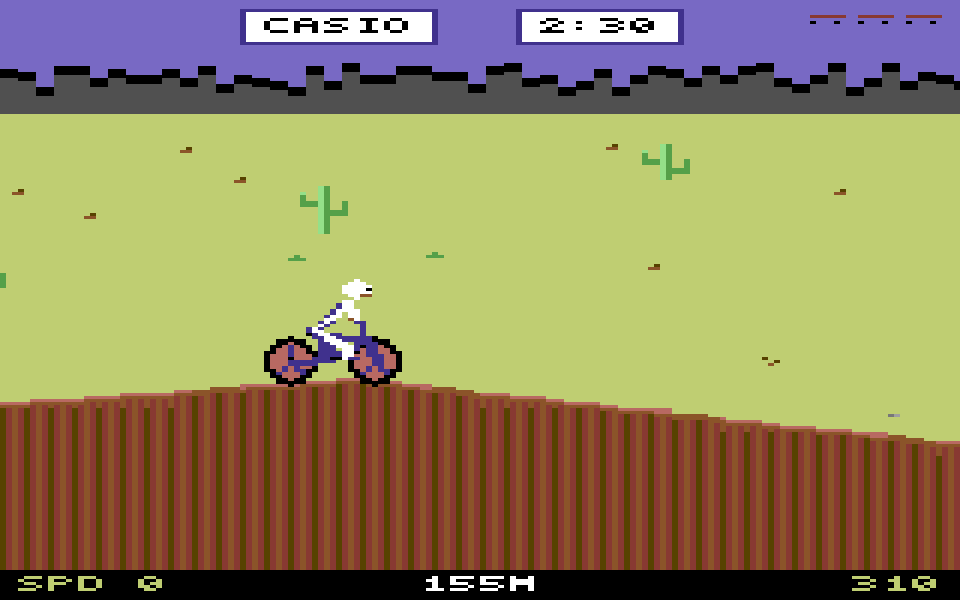
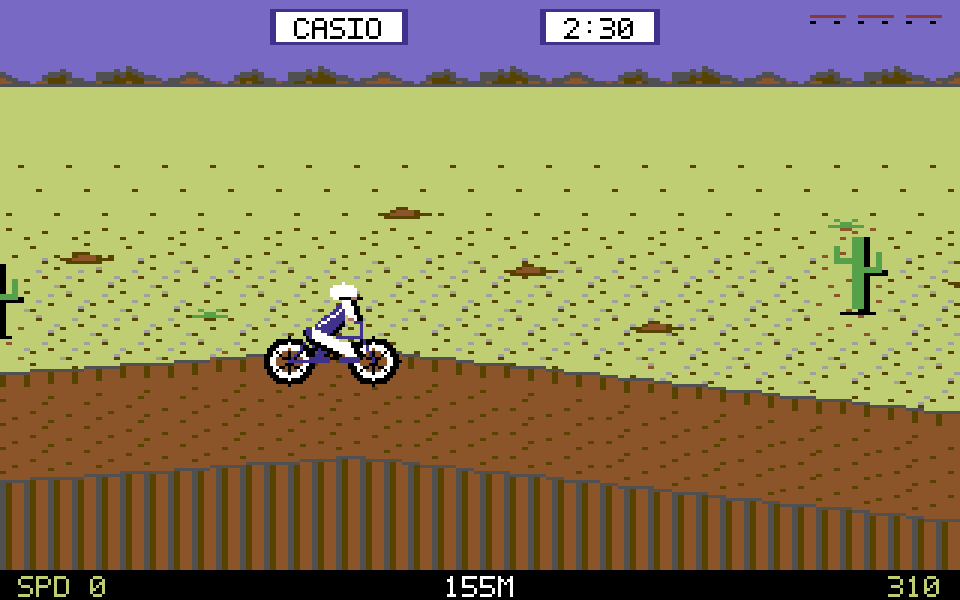
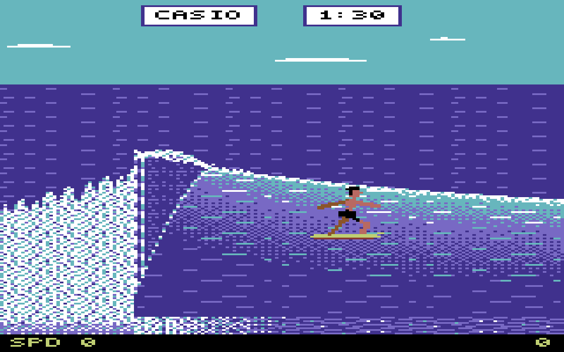
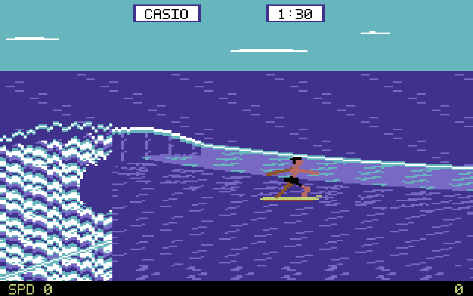
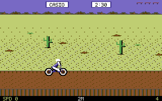
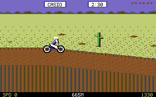
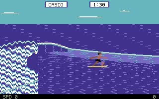
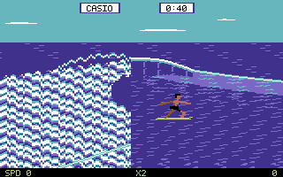
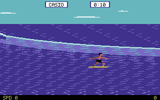

Matching game states, before and after. Both images use 4:3 display proportions. Open the games and choose BMX or SURF.









Native frame: 320 × 200. Palette: 16 C64 colors. This renderer models visual constraints; it does not emulate VIC-II timing or hardware sprite limits.